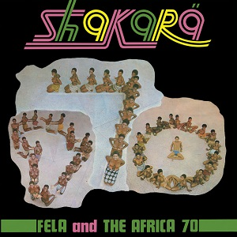
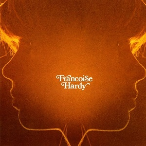

1972: Albums of the Year
-
David Bowie
The Rise and Fall of Ziggy Stardust and the Spiders From Mars
9¾
-
Popol Vuh
Hosianna Mantra
9
-
Neu!
Neu!
8½
-
Curtis Mayfield
Superfly
8¼
-
Caetano Veloso
Transa
7¾
-

Yes
Close to the Edge
7¾
-

Nick Drake
Pink Moon
7¾
-
Can
Ege Bamyası
7½
-
Milton Nascimento / Lô Borges
Clube da Esquina
7½
-
Miles Davis
On the Corner
7¼
-
Faust
So Far
7¼
-

Black Sabbath
Black Sabbath Vol. 4
7
-

Lou Reed
Transformer
7
-

T. Rex
The Slider
7
-

Roxy Music
Roxy Music
7
-

Pink Floyd
Obscured by Clouds
7
-

Steely Dan
Can't Buy a Thrill
6¾
-

Paul Simon
Paul Simon
6¾
-

Townes Van Zandt
The Late Great Townes Van Zandt
6¾
-

Jethro Tull
Thick as a Brick
6½
-
Genesis
Foxtrot
6½
-

Deep Purple
Machine Head
6¼
-
Fela & The Africa 70
Roforofo Fight
6¼
-

Kraftwerk
Kraftwerk 2
6
-

Joni Mitchell
For the Roses
5¾
-

Fela & The Africa 70
Shakara
5¾
-
The Rolling Stones
Exile on Main St.
5½
-

Pharoah Sanders
Black Unity
5¼
-
Elton John
Honky Château
5¼
-

Jean-Claude Vannier
L'enfant Assassin des Mouches
4¾
-
Tangerine Dream
Zeit
4¾
-

Neil Young
Harvest
4½
-

Stevie Wonder
Talking Book
4½
-

Big Star
#1 Record
4½
-

Slade
Slayed?
4½
-
Analogy
Analogy
4½
-
Stevie Wonder
Music of My Mind
4¼
-

John Coltrane
Infinity
4¼
-

Robbie Băsho
The Voice of the Eagle
4
-
The O'Jays
Back Stabbers
4
-
Van Morrison
Saint Dominic's Preview
4
-
Alice Cooper
School's Out
3¾
-
Fleetwood Mac
Bare Trees
3¾
-

Scorpions
Lonesome Crow
3¾
-
Gil Scott-Heron
Free Will
3¾
-

Herbie Hancock
Crossings
3¼
-

Tim Buckley
Greetings From L.A.
3¼
-
Annette Peacock
I'm the One
3
-

Eagles
Eagles
3
-

Townes Van Zandt
High, Low and In Between
2¾
-

Jeff Beck Group
Jeff Beck Group
2¾
-
Witch
Introduction
2¾
-

Françoise Hardy
Et si Je m'en Vais Avant Toi
2½
-

Chico Buarque / Nara Leão / Maria Bethânia
Quando o Carnaval Chegar
2½
-

Captain Beefheart & The Magic Band
Clear Spot
2¼
-
Thin Lizzy
Shades of a Blue Orphanage
2¼
-

Funkadelic
America Eats Its Young
2¼
-

Dusty Springfield
See All Her Faces
2
-

Lou Reed
Lou Reed
2
-

Earth, Wind & Fire
Last Days and Time
2
-
Michael Jackson
Got to Be There
2
-

Véronique Sanson
Véronique Sanson
1¾
-

Meiko Kaji
Gincho Wataridori
1¾
-

Captain Beefheart
The Spotlight Kid
1¾
-

The Doors
Full Circle
1¾
-

Michael Jackson
Ben
1¾
-

Dionne Warwick
Dionne
1¾
-

Françoise Hardy
Françoise Hardy
1½
-

Bill Evans / George Russell Orchestra
Living Time
1½
-
Cher
Foxy Lady
1½
-
Johnny Cash
A Thing Called Love
1½
-

Daryl Hall & John Oates
Whole Oats
1¼
-

REO Speedwagon
R.E.O. / T.W.O.
1¼
-
Vangelis
Fais que Ton Rêve Soit Plus Long que la Nuit
1¼
-
Scott Walker
The Moviegoer
1
-

Creedence Clearwater Revival
Mardi Gras
1
-
Tom Jones
Close Up
1
-

Orquesta La Conspiración
Ernie's Conspiracy
1
-
John & Yoko / Plastic Ono Band
Some Time in New York City
0¾